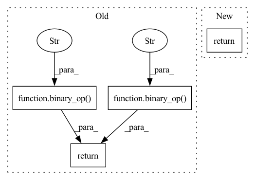

Pattern ID :38694
Before Change
def backward(ctx, grad_output):
x,y = ctx.saved_tensors
grad_x_inter = binary_op("b * pow(a, b-1.0)" , x, y, Buffer(grad_output.shape))
grad_y_inter = binary_op("log(a) * pow(a, b)" , x, y, Buffer(grad_output.shape))
return unbroadcast(binary_op("a*b", grad_output, grad_x_inter, grad_x_inter), x.shape), \
unbroadcast(binary_op("a*b", grad_output, grad_y_inter, grad_y_inter), y.shape)
// ************* movement ops *************After Change
tmp = Buffer(grad_output.shape)
grad_x = unbroadcast(binary_op("a*b", grad_output, binary_op("b * pow(a, b-1.0)", x, y, tmp), tmp), x.shape) if ctx.needs_input_grad[0] else None
grad_y = unbroadcast(binary_op("a*b", grad_output, binary_op("log(a) * pow(a, b)", x, y, tmp), tmp), y.shape) if ctx.needs_input_grad[1] else None
return grad_x, grad_y
// ************* movement ops *************
In pattern: SUPERPATTERN
Frequency: 3
Non-data size: 4
Instances Fragment ID: 110663918
Project Name: geohot/tinygrad
Commit Name: f177cd550f44050efeea4283e3216471c578428a
Time: 2022-06-06
Author: geohot@gmail.com
File Name: tinygrad/ops/ops_gpu.py
M Class Name: Pow
N Class Name: Pow
M Method Name: backward(2)
N Method Name: backward(2)
M Parent Class: Function
N Parent Class: Function
M File Name: tinygrad/ops/ops_gpu.py
N File Name: tinygrad/ops/ops_gpu.py
M Start Line: 104
M End Line: 107
N Start Line: 106
N End Line: 109
Before Change
def backward(ctx, grad_output):
x,y = ctx.saved_tensors
grad_x = binary_op("a*b" , y, grad_output, Buffer(grad_output.shape))
grad_y = binary_op("a*b" , x, grad_output, Buffer(grad_output.shape))
return unbroadcast(grad_x, x.shape), unbroadcast(grad_y, y.shape)
class Pow(Function):
def forward(ctx, x, y):After Change
tmp = Buffer(grad_output.shape)
grad_x = unbroadcast(binary_op("a*b", y, grad_output, tmp), x.shape) if ctx.needs_input_grad[0] else None
grad_y = unbroadcast(binary_op("a*b", x, grad_output, tmp), y.shape) if ctx.needs_input_grad[1] else None
return grad_x, grad_y
class Pow(Function):
def forward(ctx, x, y): Fragment ID: 110663919
Project Name: geohot/tinygrad
Commit Name: f177cd550f44050efeea4283e3216471c578428a
Time: 2022-06-06
Author: geohot@gmail.com
File Name: tinygrad/ops/ops_gpu.py
M Class Name: Mul
N Class Name: Mul
M Method Name: backward(2)
N Method Name: backward(2)
M Parent Class: Function
N Parent Class: Function
M File Name: tinygrad/ops/ops_gpu.py
N File Name: tinygrad/ops/ops_gpu.py
M Start Line: 93
M End Line: 95
N Start Line: 94
N End Line: 97
Before Change
def backward(ctx, grad_output):
shape_input, = ctx.saved_tensors
// NOTE: the b buffer_new isn"t used, since this is just for broadcast
return binary_op("a" , grad_output, buffer_new(shape_input))
class Max(Function):
def forward(ctx, input, axis=None):
ret = reduce_op("out = max(a,out)", input, axis=axis, start="-INFINITY")After Change
shape_input, = ctx.saved_tensors
// NOTE: the b buffer_new isn"t used, since this is just for broadcast
ret = buffer_new(shape_input)
return binary_op("a" , grad_output, ret, ret)
class Max(Function):
def forward(ctx, input, axis=None):
ret = reduce_op("out = max(a,out)", input, axis=axis, start="-INFINITY") Fragment ID: 110663921
Project Name: geohot/tinygrad
Commit Name: d9e57954d8fc723794e2d020dfa82639f3bd11e4
Time: 2022-06-05
Author: geohot@gmail.com
File Name: tinygrad/ops/ops_gpu.py
M Class Name: Sum
N Class Name: Sum
M Method Name: backward(2)
N Method Name: backward(2)
M Parent Class: Function
N Parent Class: Function
M File Name: tinygrad/ops/ops_gpu.py
N File Name: tinygrad/ops/ops_gpu.py
M Start Line: 41
M End Line: 41
N Start Line: 42
N End Line: 43